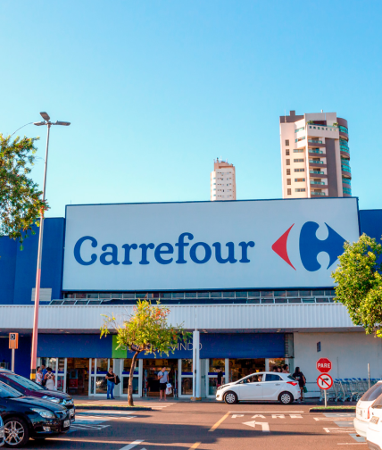

2Sense

Olá,
usuário
!
E-mail:
usuário
Perfil
Filiais
Setores
Manual
Sair
Fluxo Crítico
Menos de 15
Fluxo Baixo
De 16 a 30
Fluxo Ideal
De 31 a 50
Fluxo Alto
De 51 a 80
Fluxo Elevado
Mais de 81
123
Setor de Adega